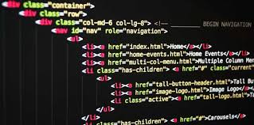

¿Les ha pasado que están super inspirados escribiendo código pero repentinamente necesitan luz divina que les diga qué nombre ponerle a la variable que están a punto de escribir?
Lo más importante es que el nombre que le asignes siempre refleje el trabajo que está haciendo, de esta forma podemos incluso reducir la necesidad de comentar cada línea de código con su funcionamiento.
A continuacion algunos consejos que hay que seguir para evitar algún desastre a la hora de nombrar un elemento en tu código.
Abreviar nombres puede que en algunos casos no sea tan buena idea. Seguramente con el paso del tiempo o cuando un nuevo desarrollador tenga que darle mantenimiento a tu codigo habra quedado en el olvido lo que esa variable representa. Lo ideal es utilizar nombres que describan la funcionalidad de nuestro código.
Por ejemplo, es mucho más descriptivo escribir:

Que:
Generalmente los lenguajes de programacion no permiten espacios en las variables. Sin embargo hay distintos métodos para separar el conjunto de palabras que conforman una variable y que de esta manera logren ser más legibles. Esto se puede hacer capitalizando con palabra agrupada (camelCase) o separando cada palabra con underscore (snake_case).e_case).
Por ejemplo:

o
A pesar de que los nombres de variables cortos deben ser sustituidos por nombres de variables más largos y descriptivos, no quiere decir que tenemos que usar frases completas. Es importante que el nombre describa qué es lo que el código asignado hace y no cómo lo hace. Utilizar un nombre largo puede incluso ser más susceptible a errores tipográficos a la hora de escribirlo. Se dice que la la longitud recomendable es de 2 a 4 palabras o entre 8 y 20 caracteres.
En conclusión nombrar elementos no es dificil, más bien es un super poder o habilidad que va mejorando con la práctica. Nosotros como desarrolladores tenemos la responsabilidad de hacerlo lo mejor posible.
Si recién comienzas a programar, te invito al Curso de programación básica para empezar a implementar estos consejos en tus proyectos. Y si ya tiempo programando sin hacer uso de ellos, compártenos como te va siguiendo estas recomendaciones. Estoy segura que los desarrolladores que se topen con tu código en el futuro te lo agradecerán.